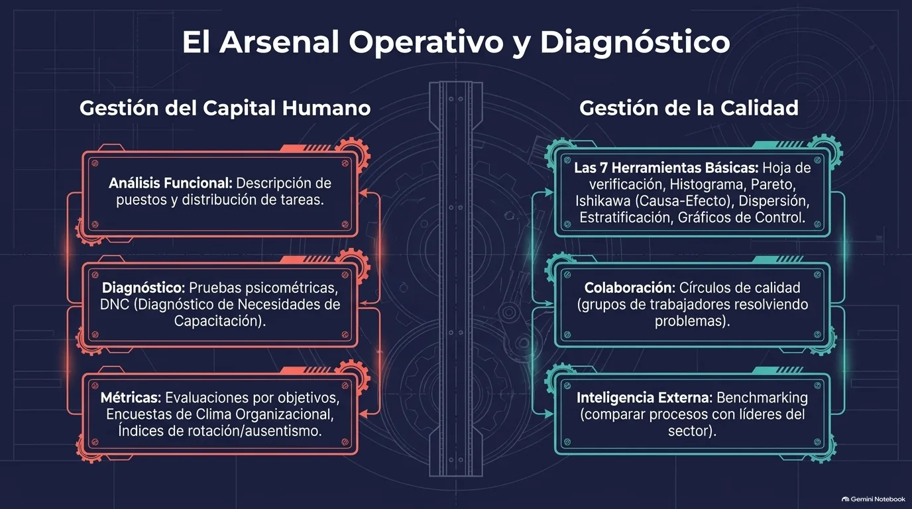
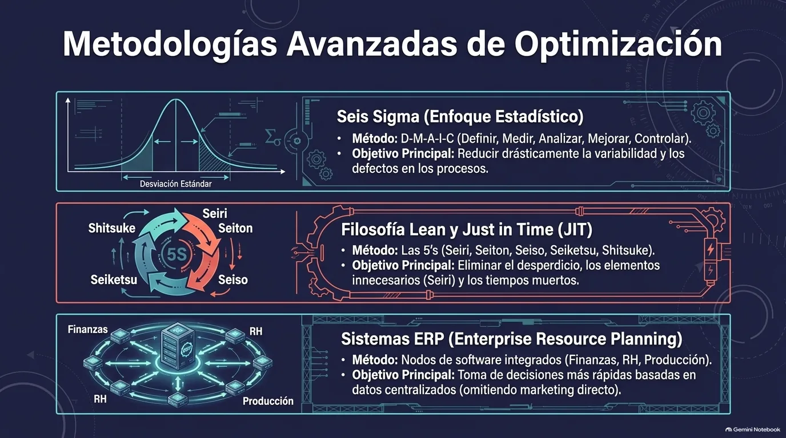
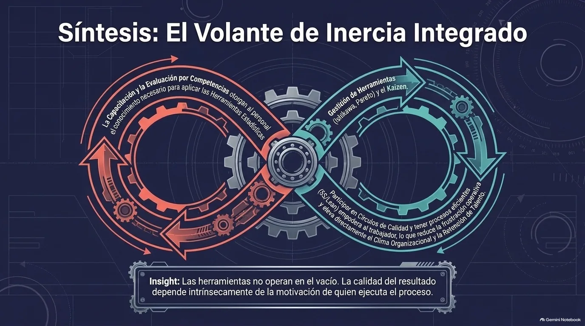
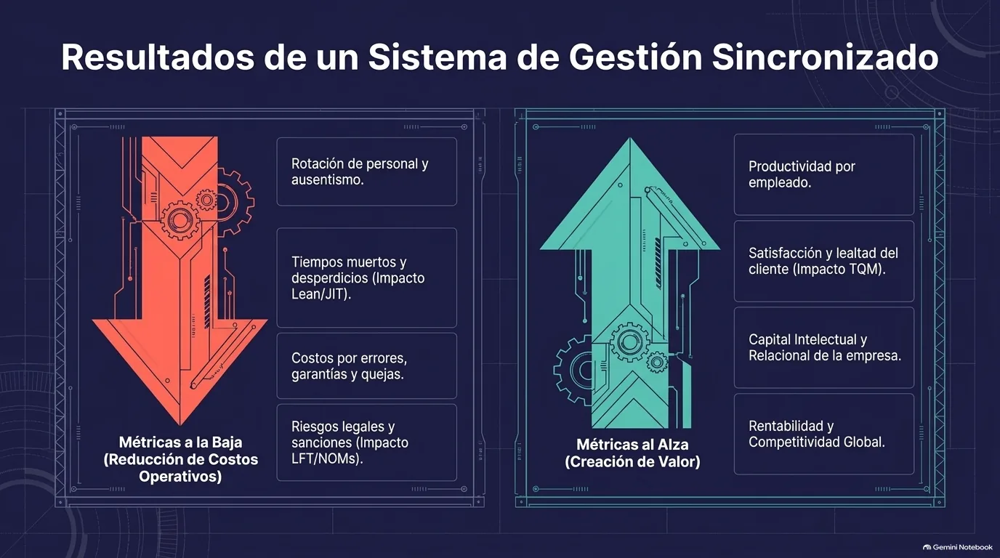
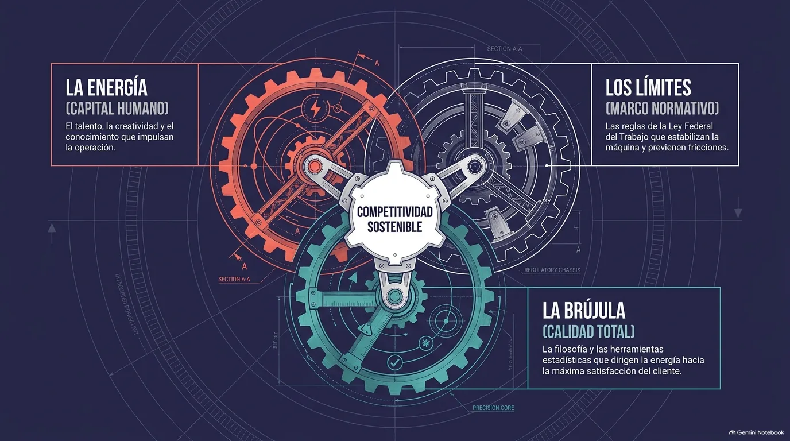
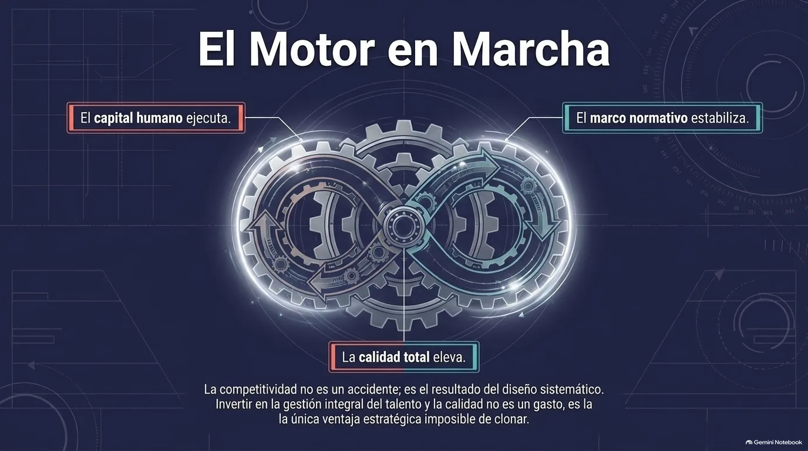

Unidad IV · Tema 4.4
Herramientas de Gestión del Capital Humano y de Calidad
Las herramientas de gestión del capital humano sirven para atraer, desarrollar, evaluar y retener al talento; las de gestión de la calidad, para controlar, medir y mejorar los procesos. Ambos grupos están muy ligados, porque la calidad de los resultados depende de las capacidades, la motivación y el compromiso de quienes ejecutan esos procesos.
4.4.1Herramientas de gestión del capital humano
La base de casi todos los procesos de recursos humanos es el análisis y descripción de puestos (también llamado análisis funcional): identificar y documentar las funciones, responsabilidades, requisitos y condiciones de cada cargo. Con él se logra una mejor distribución de tareas y una asignación eficiente del personal, y de ahí salen los perfiles de puesto, que definen los conocimientos, habilidades y competencias que debe tener quien lo ocupe.
| Propósito | Herramientas |
|---|---|
| Diseñar el trabajo | Análisis y descripción de puestos, perfiles de puesto, planeación de recursos humanos. |
| Atraer y elegir | Entrevistas, pruebas psicométricas y técnicas, evaluaciones por competencias. |
| Integrar y desarrollar | Programas de inducción, diagnóstico de necesidades de capacitación (DNC), planes de capacitación: cursos, talleres, mentoría, rotación de puestos, aprendizaje en línea. |
| Evaluar | Evaluación por objetivos, evaluación de 360 grados, escalas de calificación basadas en comportamientos. |
| Motivar y retener | Sistemas de compensación y reconocimiento, planes de carrera y de sucesión, encuestas de clima organizacional. |
| Medir | Rotación de personal, ausentismo, productividad por empleado, horas de capacitación por trabajador. |
La gestión por competencias articula todos estos procesos alrededor de las capacidades clave que la empresa necesita para cumplir su estrategia. El DNC, por su parte, mide la diferencia entre las competencias que el puesto requiere y las que la persona realmente tiene, para decidir qué capacitación ofrecer.

Nota. Infografía del material didáctico de la Unidad 4 de Gestión Empresarial (ESCOM - IPN), generada con Gemini Notebook.
4.4.2Las siete herramientas básicas de la calidad
Sirven para recolectar y analizar datos de manera sencilla y fueron difundidas por Kaoru Ishikawa:
| Herramienta | Para qué sirve |
|---|---|
| Hoja de verificación | Registrar de forma ordenada cuántas veces ocurre un evento o defecto. |
| Histograma | Mostrar cómo se distribuyen los datos. |
| Diagrama de Pareto | Señalar los pocos problemas vitales que causan la mayoría de los efectos (regla 80/20). |
| Diagrama de causa y efecto (Ishikawa) | Encontrar el origen de un problema agrupando sus posibles causas. |
| Diagrama de dispersión | Analizar la relación entre dos variables. |
| Estratificación | Separar los datos en grupos para detectar patrones. |
| Gráfica de control | Vigilar que un proceso se mantenga estable y detectar a tiempo si algo se sale de lo normal. |
4.4.3Metodologías de mejora
Además de estas técnicas, las empresas usan metodologías de mejora más amplias:
Ciclo PHVA o de Deming
Guía la mejora continua con las etapas de planear, hacer, verificar y actuar.
Seis Sigma (DMAIC)
Reduce la variabilidad y los defectos con un enfoque estadístico en cinco fases: definir (Define), medir (Measure), analizar (Analyze), mejorar (Improve) y controlar (Control).
Lean y Just in Time (JIT)
Eliminan desperdicios, tiempos muertos y actividades que no aportan valor; producir justo lo que se necesita, cuando se necesita, mejora la calidad y reduce inventarios. Se apoyan en las 5S, el mapeo de la cadena de valor y el sistema Kanban.
AMEF y QFD
El análisis de modo y efecto de fallas se adelanta a posibles errores y sus consecuencias; el despliegue de la función de calidad traduce lo que necesita el cliente en características técnicas del producto.
| Término | Significado | Acción |
|---|---|---|
| Seiri | Clasificar | Eliminar lo innecesario del área de trabajo. |
| Seiton | Ordenar | Un lugar para cada cosa y cada cosa en su lugar. |
| Seiso | Limpiar | Limpiar e inspeccionar para detectar anomalías. |
| Seiketsu | Estandarizar | Fijar normas para mantener las tres primeras S. |
| Shitsuke | Disciplina | Convertir las prácticas en hábito. |
El objetivo de las 5S es crear un ambiente de trabajo organizado y eficiente.

Nota. Infografía del material didáctico de la Unidad 4 de Gestión Empresarial (ESCOM - IPN), generada con Gemini Notebook.
4.4.4Sistemas, auditorías y participación
Los sistemas normativos como la ISO 9001 y las auditorías internas y externas permiten verificar que los procesos se realicen como se estableció y que se tomen acciones correctivas y preventivas ante las desviaciones. Los sistemas ERP (Enterprise Resource Planning) integran en una sola plataforma módulos como finanzas, recursos humanos y producción, de modo que las decisiones se toman más rápido y con datos centralizados.
Dos prácticas fomentan la participación y el aprendizaje: los círculos de calidad, grupos de trabajadores que se reúnen periódicamente para analizar y resolver problemas de su área, y el benchmarking, que compara los procesos y prácticas propios con los de empresas líderes para identificar áreas de mejora.
4.4.5Integración de ambos tipos de herramientas
La gestión del capital humano y la de la calidad tienen que trabajar juntas. La capacitación da al personal el conocimiento para aplicar las herramientas de calidad, y los sistemas de evaluación y reconocimiento pueden incluir indicadores de calidad que motiven a mejorar. A su vez, una cultura de calidad requiere que los trabajadores participen en detectar problemas y proponer soluciones, lo que fortalece su compromiso con la empresa.

Nota. Infografía del material didáctico de la Unidad 4 de Gestión Empresarial (ESCOM - IPN), generada con Gemini Notebook.

Nota. Infografía del material didáctico de la Unidad 4 de Gestión Empresarial (ESCOM - IPN), generada con Gemini Notebook.
4.4.6Cierre de la unidad
Los cuatro temas forman un mismo sistema: el capital humano aporta la energía, el marco normativo pone los límites que estabilizan la operación y la calidad total funciona como brújula que dirige el esfuerzo hacia la satisfacción del cliente. Las herramientas revisadas en este tema son las que convierten esas ideas en prácticas medibles.

Nota. Infografía del material didáctico de la Unidad 4 de Gestión Empresarial (ESCOM - IPN), generada con Gemini Notebook.

Nota. Infografía del material didáctico de la Unidad 4 de Gestión Empresarial (ESCOM - IPN), generada con Gemini Notebook.
La competitividad no es un accidente: es el resultado de un diseño sistemático.
Breakout: Herramientas de gestión del capital humano y de calidad
Comprueba tu comprensión
Relaciona cada herramienta con el problema que resuelve; después, aplica todo lo aprendido en el caso integrador.